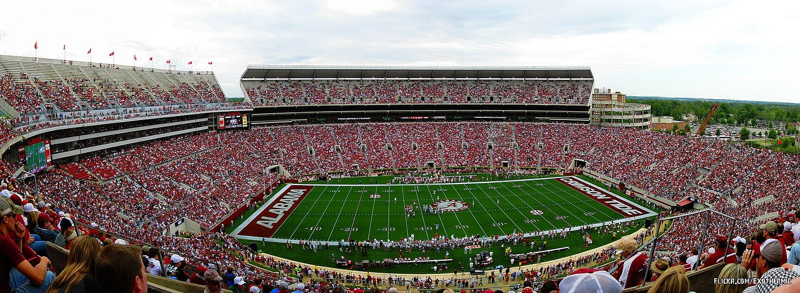
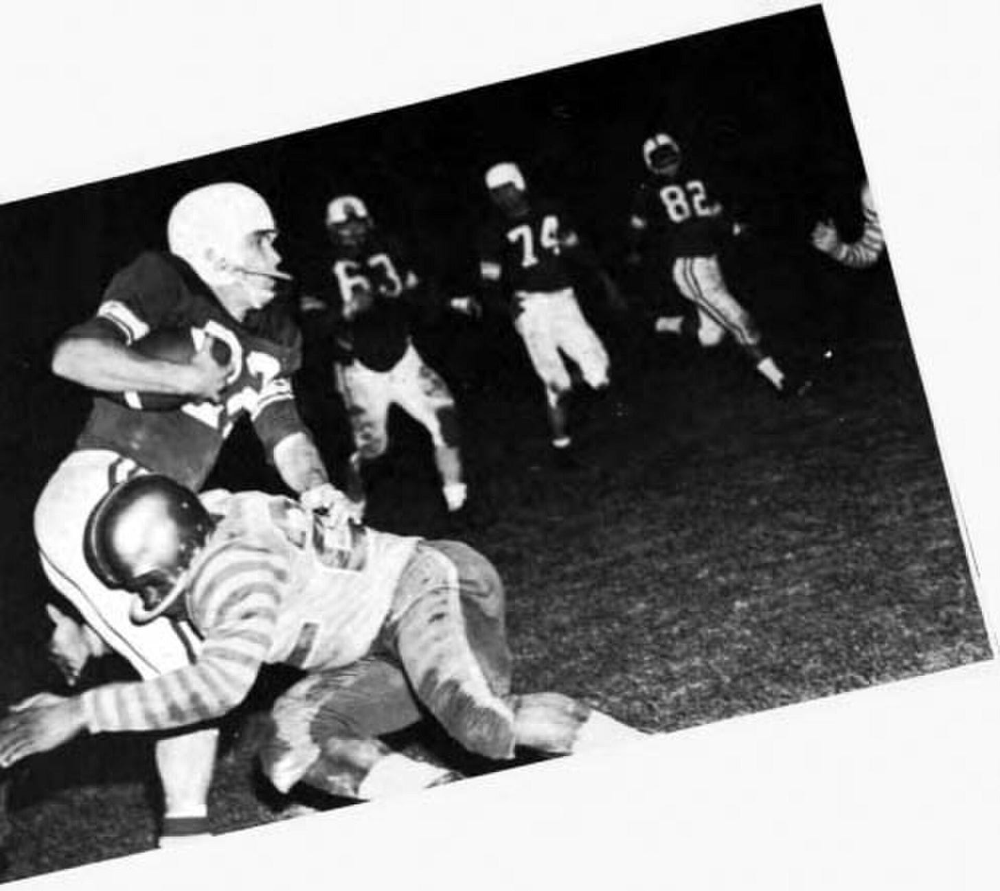
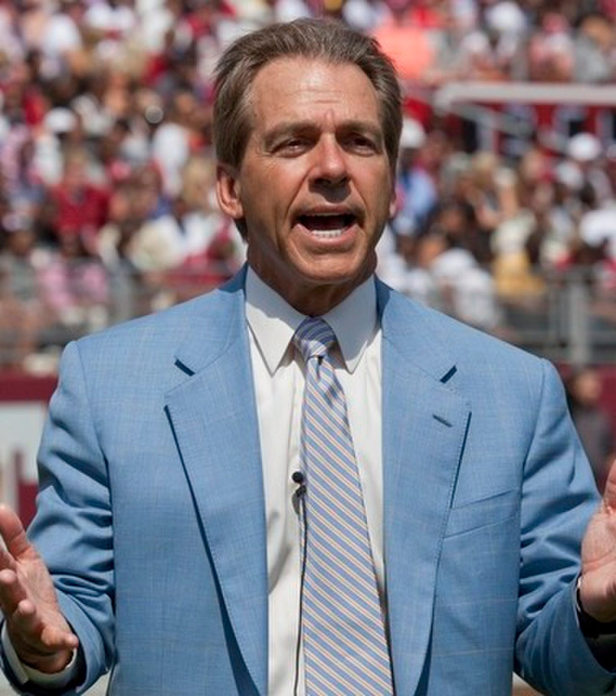
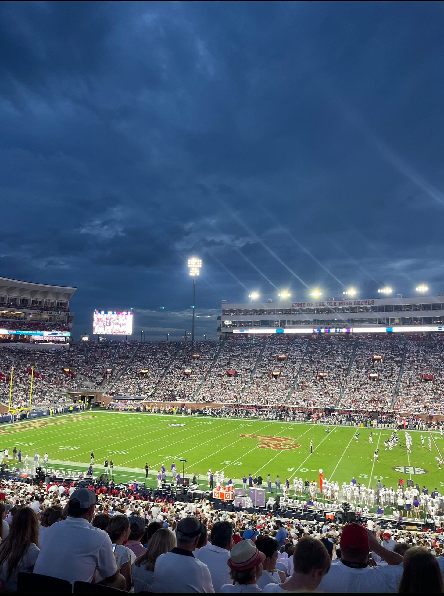
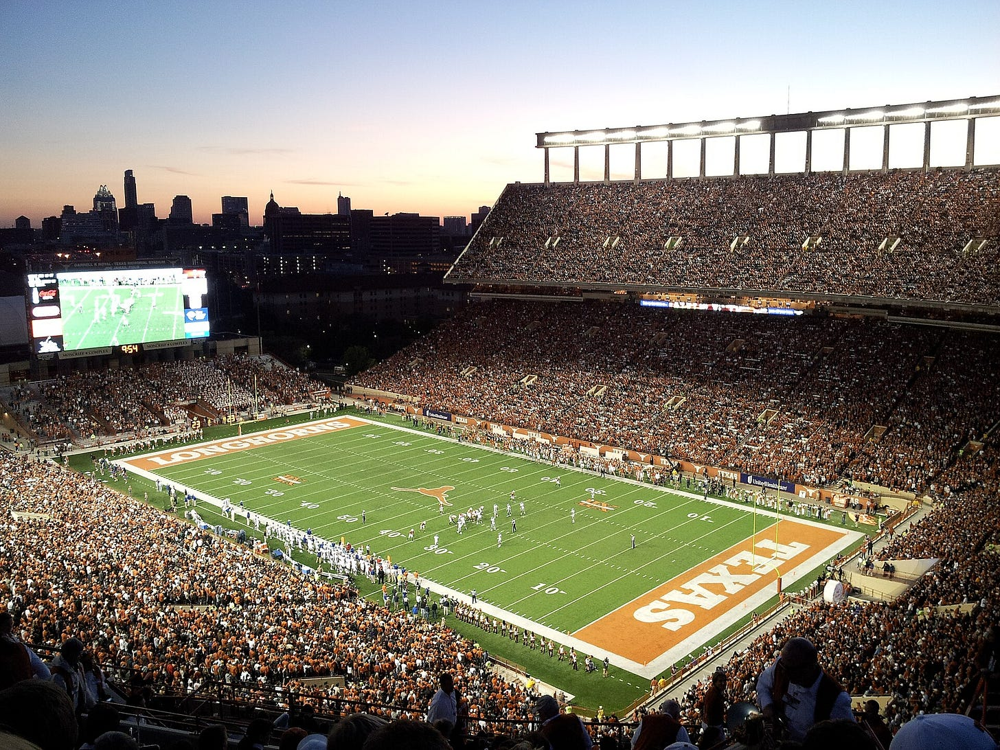
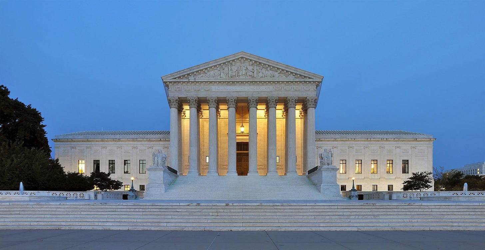
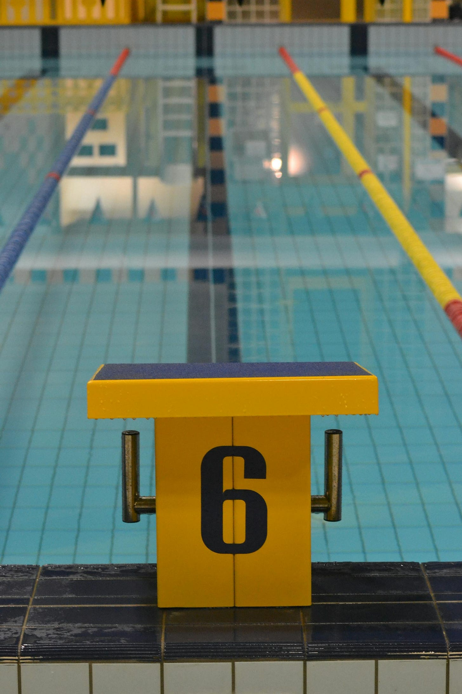

The financial engine of the Southeastern Conference is football. Alabama football alone produced $142.6 million in revenue and $64.1 million in profit in 2024-25, a 45% margin on a single sport at a single university.
In seventeen years at Alabama (2007-2024), Nick Saban went 201-29, won six national championships, and grew football revenue from $57.4 million to a peak of $214.4 million — a 274% increase, and it dropped to $142.6 million the year after he left. His peak salary was $11.7 million. The return on that investment was roughly 18:1 annually. Enrollment grew 51%. Each home game generated $26.6 million in economic activity for the surrounding region. Saban wasn’t a football coach, but an economic engine.
Alabama and the SEC understood something the other conferences didn’t: football funds the university’s brand, its enrollment pipeline, its donor base, its political relationships, and — through cross-subsidy — every other sport on campus.
In 1951, the NCAA hired a 29-year-old former Big Ten sports information assistant named Walter Byers as its first executive director, and he would run the organization for 37 years. Byers invented amateurism, not as a philosophy, but as a legal instrument. In September 1955, a Fort Lewis A&M football player named Ray Dennison took a helmet hit on the opening kickoff that shattered the base of his skull. He died 30 hours later, his widow filing for workers’ compensation death benefits. Byers saw the existential threat immediately: if athletes were classified as employees, the entire system of free labor in exchange for education would collapse.
So he created a phrase. “Student-athlete.” He convened his legal team, embedded the term into every NCAA rule and interpretation, and instructed member schools to use “college teams” instead of “clubs”. The Colorado Supreme Court ruled that Dennison’s widow wasn’t eligible for benefits because the college was “not in the football business.”
In 1974, TCU running back Kent Waldrep was paralyzed from the neck down during a game against Alabama. Two decades later, the Texas Workers’ Compensation Commission ruled he had been an employee and awarded him $70 per week for life plus medical costs. The appeals court reversed the decision. The reasoning: Waldrep was a “student-athlete,” not an employee. The term Byers had invented to prevent exactly this outcome worked. Waldrep went on to serve on the National Council on Disability and helped draft the Americans with Disabilities Act. The man the NCAA refused to classify as an employee helped write the landmark disability rights law.

The NCAA became what economists would later call a textbook cartel. Judge Milan Smith described it as “a cartel of buyers acting in concert to artificially depress the price that sellers could otherwise receive for their services.” The mechanisms were classic: limits on scholarship numbers, caps on grant-in-aid amounts, one-year renewable contracts, restrictive transfer rules, bans on agents.
The cartel generated extraordinary revenue. The NCAA reported $1.38 billion in revenue in fiscal 2024. The March Madness TV deal alone pays $873 million per year. The athletes who produce this content received scholarships, meal plans, and a prohibition on earning money from their own names.
In 1995, Byers published Unsportsmanlike Conduct: Exploiting College Athletes. His conclusion, after 37 years of running the machine he built: “Collegiate amateurism is not a moral issue; it is an economic camouflage for monopoly practice.” The man who invented “student-athlete” spent his final years trying to kill it.
The system Byers built didn’t benefit the athletes but rather coaches, administrators, and boosters.
Coaching salaries tell the story. Nine college football head coaches now earn over $10 million per year. Five of the ten highest-paid are in the SEC, led by Kirby Smart at $13.3 million annually. Nick Saban earned approximately $120 million during his Alabama tenure. These are market-rate salaries in a system that explicitly prohibits market-rate compensation for the labor force that generates the revenue.
Coaches operated in a free market in which they could negotiate, switch schools, sign endorsement deals, and earn whatever the market would bear. Players operated in a cartel in which their compensation was capped at the cost of attendance, regardless of the revenue they generated. The same institution that paid its head coach $13 million told its starting quarterback that accepting a free meal from a booster was an NCAA violation.

Boosters filled the gap. For decades, the shadow economy of college football operated on handshakes, cash in envelopes, cars, apartments, and jobs for family members. The NCAA selectively enforced, creating a system where the punishment for getting caught wasn’t proportional to the violation but to your political power within the cartel. SMU received the death penalty in 1987 for paying players. SMU managed only one winning season in the next two decades.
The Manning family is a controlled experiment in labor economics, running across fifty years of American football.
Archie Manning played at Ole Miss from 1968 to 1970. He earned $0. He was drafted 2nd overall by the New Orleans Saints in 1971 and signed a 5-year, $410,000 deal — the richest rookie contract in the NFL at the time, which works out to roughly $50,000 per year plus a $160,000 signing bonus. The average NFL salary in 1970 was $23,200. Terry Bradshaw, a number one overall pick and four-time Super Bowl champion, sold insurance in the offseason during the 1970s. Archie played 14 NFL seasons, never had a winning record, and his estimated net worth today is $10 million.

Peyton Manning played at Tennessee from 1994 to 1997, four years as a starter, 39-6 record, SEC champion, Heisman runner-up. He earned $0. Under current NIL rules, analysts estimate his college value would have exceeded $8-12 million per year — more than his father earned in his entire NFL career. Peyton was drafted first overall in 1998, and went on to earn $248.7 million in NFL salary and $151 million in endorsements. His production company, Omaha Productions, was valued at $750 million in 2025 after selling a 10% stake to a Silver Lake-backed vehicle. Combined net worth: roughly $250-300 million.
Eli Manning followed Archie to Ole Miss, earned $0, was drafted first overall in 2004 in one of the most dramatic trades in NFL history — the Mannings publicly refused to play for San Diego, forcing a draft-day swap that sent Eli to New York for Philip Rivers and three draft picks. He earned $252.3 million in NFL salary alone, retiring as the highest-paid player in league history at the time.
Arch Manning, Peyton’s nephew and Archie’s grandson, enrolled at Texas in 2023 and was the first Manning to play college football under NIL rules. His valuation: $6.8 million, the highest in college sports. His confirmed 2025 NIL earnings: $3.5 million from deals with Red Bull, EA Sports, Uber, Vuori, and Raising Cane’s. He earns more than triple the average SEC starting quarterback ($900,000) and more per year than his grandfather earned in his entire NFL career.

The talent was always there. The market access wasn’t.
The NCAA’s defense rested on a single precedent: NCAA v. Board of Regents of the University of Oklahoma (1984), a case about television rights. The Supreme Court struck down the NCAA’s monopoly on football broadcasting, but Justice Stevens, writing for the majority, included language that the NCAA’s role in maintaining “a revered tradition of amateurism in college sports” was necessary to “preserve the character and quality of the product.” Stevens’s language was judicial commentary, not binding law. Athlete compensation rules were not at issue in the case. But for thirty-seven years, the NCAA cited it like statute. The argument was circular — the product is defined by not paying, therefore not paying is essential to the product — but courts deferred to it.
Under the Sherman Antitrust Act, competitors agreeing to fix the price of labor is ordinarily illegal on its face. Courts gave the NCAA an exception — applying a more lenient “rule of reason” analysis — because some cooperation is necessary to produce the product at all. You need agreed-upon rules to play a game.
Ed O’Bannon, UCLA’s starting power forward on the 1995 national championship team, walked into a friend’s house and saw himself in a video game. EA Sports’ *NCAA Basketball 09* featured an unnamed UCLA player matching his position, height, weight, bald head, skin tone, jersey number, and left-handed shot. He hadn’t been asked nor paid, so he sued.
In 2014, Judge Claudia Wilken ruled the NCAA’s amateurism rules were an unreasonable restraint of trade. The NCAA had fixed the price of athlete NIL rights at zero — in a market where it was functionally the only buyer. The Ninth Circuit affirmed the core finding and confirmed what the NCAA had denied for decades: the *Board of Regents* language about amateurism was dicta, not holding.
Shawne Alston, a former West Virginia running back, led a class action challenging NCAA limits on education-related benefits. The case reached the Supreme Court.

The Court ruled 9-0 against the NCAA. Justice Gorsuch dismantled the *Board of Regents* defense directly: “The student-athlete compensation rules at issue in this case were not even at issue in Board of Regents.” The dicta the NCAA had relied on for nearly four decades was formally declared irrelevant.
Justice Kavanaugh wrote a devastating concurrence. “The NCAA’s business model would be flatly illegal in almost any other industry in America.” He drew the analogy explicitly: “All of the restaurants in a region cannot come together to cut cooks’ wages on the theory that ‘customers prefer’ to eat food from low-paid cooks. Law firms cannot conspire to cabin lawyers’ salaries in the name of providing legal services out of a ‘love of the law.’ Hospitals cannot agree to cap nurses’ income in order to create a ‘purer’ form of helping the sick. News organizations cannot join forces to curtail pay to reporters to preserve a ‘tradition’ of public-minded journalism. Movie studios cannot collude to slash benefits to camera crews to kindle a ‘spirit of amateurism’ in Hollywood.”
Kavanaugh went further than the majority. He signaled that the *remaining* compensation limits would not survive the next challenge. His concurrence was not the majority opinion and thus not a legal holding, but it was a roadmap.
Nine justices agreed the NCAA had violated the law. One justice told the world that the entire model was indefensible. Ten days later, the NCAA dropped its restrictions on Name, Image, and Likeness compensation.
Three consolidated class actions (House v. NCAA, Carter v. NCAA, and Hubbard v. NCAA) challenged the NCAA’s historical restrictions on athlete compensation as violations of Section 1 of the Sherman Act. The damages claim: $1.976 billion for NIL violations, $600 million for pay-for-play restrictions. Combined with trebling under the Clayton Act, the NCAA faced potential liability exceeding $8 billion.
The case never went to trial. The NCAA settled for $2.78 billion, the largest settlement in the history of American sports, covering back pay to approximately 14,600 athletes who competed from 2016 to 2025. Judge Wilken granted final approval in June 2025. On July 1, schools began writing checks to athletes for the first time. The settlement established a revenue-sharing framework: schools that opt in can distribute up to $20.5 million per year directly to athletes, rising to $32.9 million by 2034-35. 310 Division I schools opted in. 54 opted out, including every Ivy League school.
The transfer portal is now free agency. Any athlete can enter a database signaling intent to transfer. Combined with NIL, it functions identically to professional free agency -- players evaluate offers, compare compensation packages, and move to the highest bidder. In 2025, over 10,500 college football players entered the portal across all divisions. Only about half found a new school.
Third-party organizations funded by wealthy alumni pool money to pay athletes through NIL deals. They account for more than 80% of the estimated $2.5 billion college NIL market — though collectives are collapsing as revenue sharing absorbs their function. The average 2025 CFP team spent just under $26 million on its roster, $15 million via school revenue sharing and $11 million via third-party NIL. Texas led all programs, earmarking over $35 million for athlete-related revenue sharing. Texas Tech spent $7 million on its defensive line alone.
The $20.5 million cap is already being gamed. Schools frontload collective deals before the July 1 implementation date. Notre Dame’s athletic director told reporters: “The numbers you’re hearing don’t compute with the cap number.” The cartel collapsed. The replacement structure is being circumvented in year one.
The question underneath all of this isn’t about money.
College athletics used to operate under a fiction: that athletes were students first, that competition was an extension of education, that amateurism preserved something pure. The fiction was economically exploitative and legally indefensible. Byers knew it. Kavanaugh confirmed it. The market corrected it.
But the fiction also held something real. The idea that sport at a university serves a different function than sport in a professional league — that it builds identity, community, belonging, and institutional memory in ways that a paycheck doesn’t capture. That idea isn’t wrong just because the NCAA weaponized it.
Forty-seven non-revenue sports programs have been cut since the House settlement. The starting quarterback at Texas earns $3.5 million. The women’s swimming team at Cal Poly no longer exists. Wrestling at Cleveland State is gone. Tennis programs at seven schools were eliminated in twelve months. These programs didn’t generate revenue. They generated athletes, communities, and opportunities for people who would never play professionally and never wanted to.

Three generations of Mannings tell the story. Archie played for free in a system that would use his name to sell tickets and never pay him a dollar beyond his scholarship. Peyton played for free in a system that generated billions and paid its coaches millions while its athletes earned nothing. Arch plays in the first season where his school can pay him directly -- $3.5 million a year, at 20 years old, for playing quarterback at a public university.
The arc bends toward the market.